Vino! Osasco: Um lugar para viver o mundo de taça em taça.
Wine bar e restaurante na Vila Yara. Centenas de vinhos em taça ou garrafa, escolhidos direto da estante, e pratos em porções para dividir com a mesa.
Ter a sex, 18h às 23h30 · Sáb, 12h às 16h e 18h às 23h30
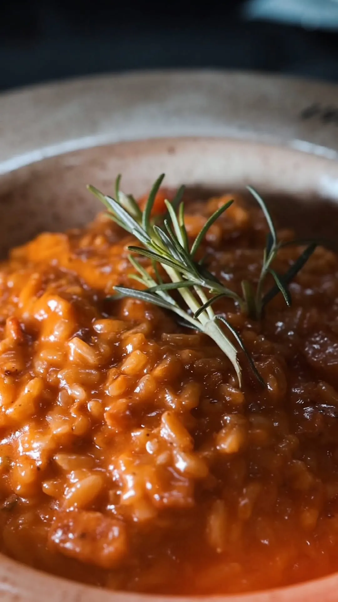
A regra é fugir à regra!
No Vino! você pode e deve beber aquilo que estiver com vontade, sem regras, sem formalidades e sem preconceitos!
Os vinhos ficam expostos nas estantes, prontos para você escolher. Vá até a adega, pegue o rótulo que chamou sua atenção e decida se quer a garrafa ou só uma taça.
Os pratos vêm em porções que permitem provar mais de uma opção e compartilhar. Assim dá para harmonizar cada um com um vinho diferente ao longo da mesma refeição.
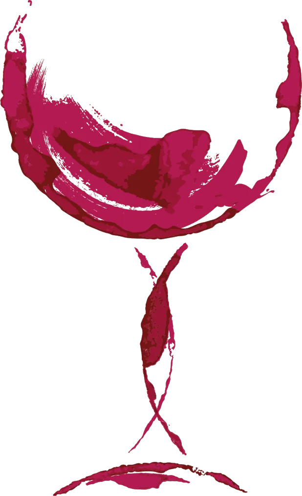
Aqui o preço da taça é proporcional à quantidade de vinho retirada da garrafa.
Você pode tomar quantas taças quiser, sem pagar a mais por isso. Simples, justo e acessível para todos!
Cardápio
Uma amostra do que sai da cozinha. Cada prato traz uma sugestão de vinho para acompanhar, mas a escolha é sempre sua.
Pratos vegetarianos.
Para compartilhar
-
Burrata! ✓
Burrata fresca cremosa temperada com azeite, flor de sal e pimenta preta, servida com tomate cereja e pesto. Acompanha nossa focaccia.
Sugestão de vinho: Vinhos brancos Chardonnay ou Pinot Grigio.
-
Camarões al pil pil!
Camarões puxados no azeite, com alho, cebola chalota e pimenta dedo de moça. Acompanha nossa focaccia.
Sugestão de vinho: Vinhos brancos Torrontés, Riesling ou brancos do Loire.
-
Arancini de cogumelos e nozes! ✓
Bolinhos de risoto à base de cogumelos, nozes, queijo brie e açafrão, servidos com fonduta de parmesão.
Sugestão de vinho: Vinhos brancos Chardonnay amadeirados ou Viognier.
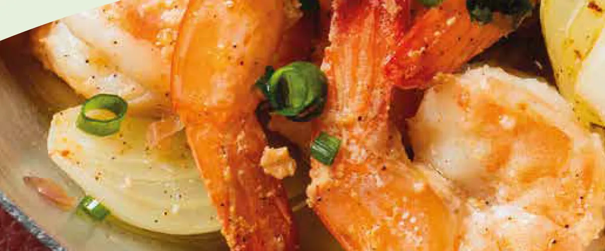
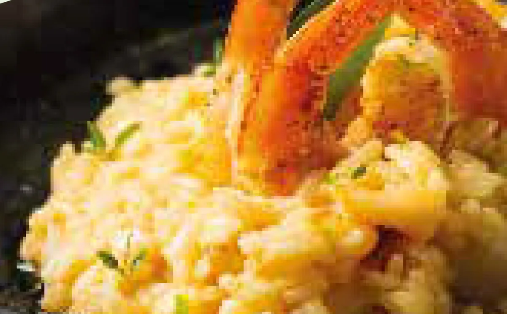
Risotos
Todos levam a base clássica de risoto al parmigiano, feito com arroz carnaroli al dente, manteiga, vinho branco e queijo parmesão.
-
Licor limoncello!
Um cremoso risoto de licor limoncello, com camarões e lulas salteadas.
Sugestão de vinho: Vinhos brancos Malvasia ou Gewurztraminer.
-
Queijo gorgonzola com pera e nozes! ✓
Um cremoso risoto de gorgonzola com pera em calda e nozes.
Sugestão de vinho: Vinhos brancos Sauvignon Blanc ou Riesling.
-
Bacalhau ao Porto!
Um cremoso risoto de bacalhau desfiado, alho-poró e pimentões em azeite extra virgem.
Sugestão de vinho: Vinhos brancos portugueses do Alentejo ou Douro, tintos leves, sem taninos.
Individuais
-
Polenta com ragú de costela e farofinha de alho!
Polenta cremosa de milho, com creme de leite fresco e queijo parmesão, acompanhada de ragú de costela desfiada e farofinha de alho.
Sugestão de vinho: Vinhos tintos Cabernet Franc ou Merlot.
-
Entrecôte ao molho poivre!
Entrecôte grelhado fatiado com molho poivre, servido com batatas rústicas.
Sugestão de vinho: Um Bordeaux com base Cabernet Sauvignon, um Douro jovem ou um Tannat uruguaio.
-
Gnocchi al forno com brie! ✓
Gnocchi artesanal gratinado com fonduta de parmesão com brie assado.
Sugestão de vinho: Vinhos tintos Bordeaux jovens ou Borgonha Villages.
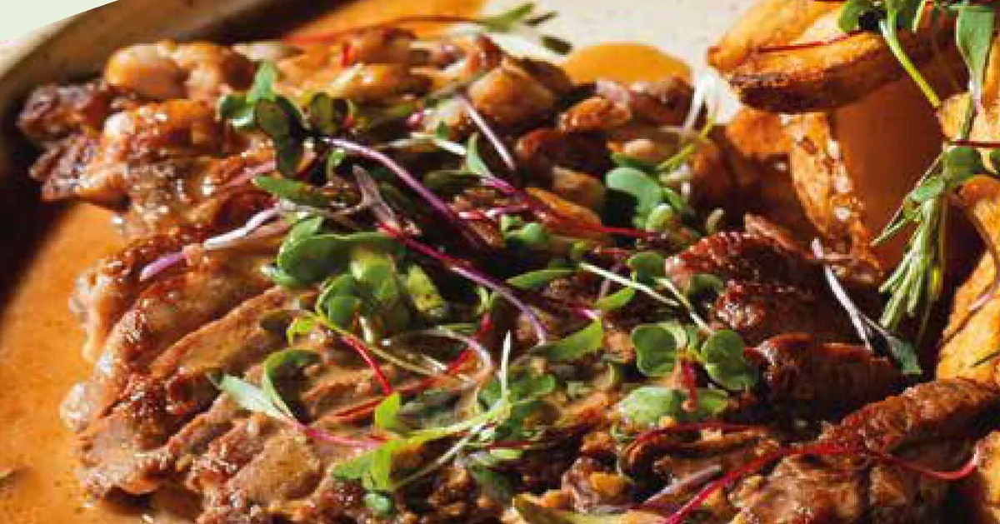
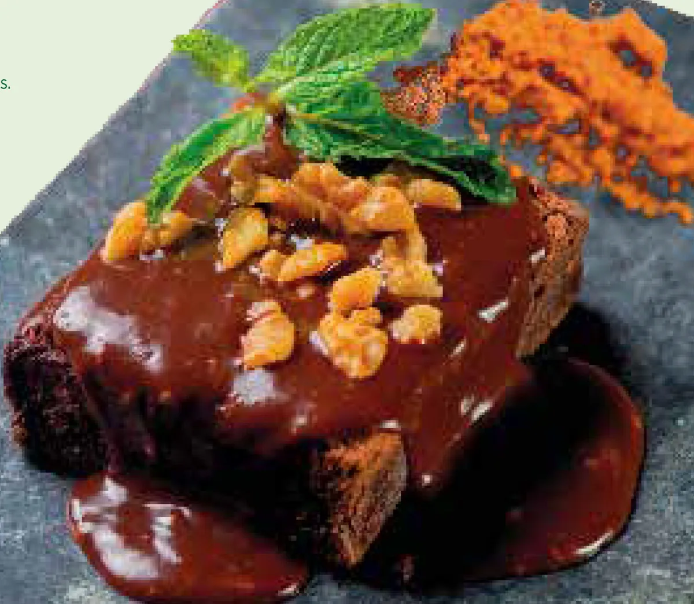
Para adoçar
-
Brownie de chocolate e calda de Nutella! ✓
Sugestão de vinho: Vinhos do Porto Ruby ou Tawny.
-
Sorvete de manjericão com coulis de morango ao vinho branco!
Sugestão de vinho: Espumantes Moscatel.
-
Cheesecake com morangos em calda!
Sugestão de vinho: Vinhos de colheita tardia ou Riesling com boa acidez.
O cardápio completo tem ainda frios, queijos, ceviche, tartares, massas, carnes e mais sobremesas.
Você no Vino! Osasco
Aniversários, encontros de família e noites a dois. Uma parte das fotos que a casa publica no Instagram.
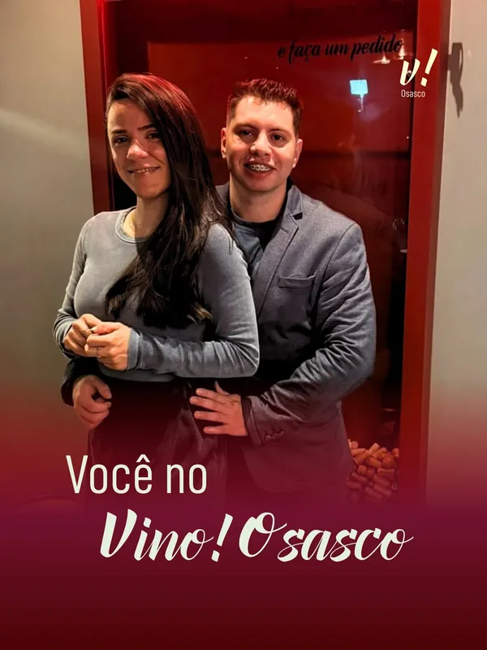
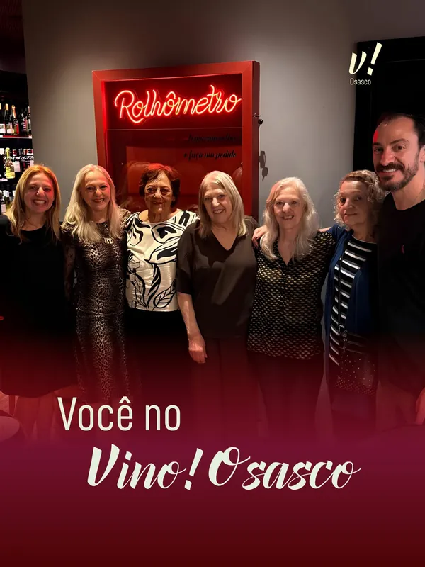
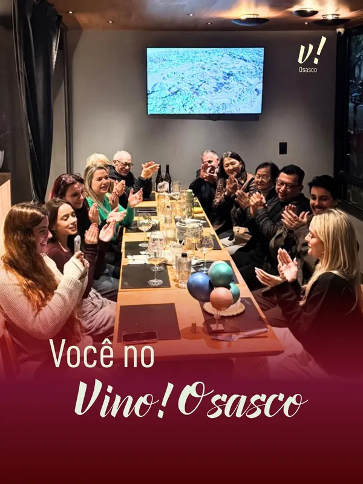
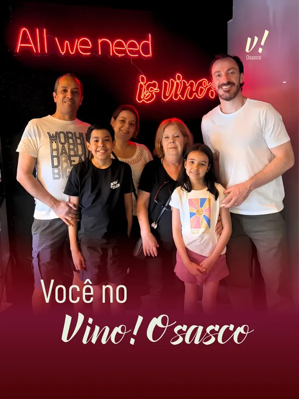
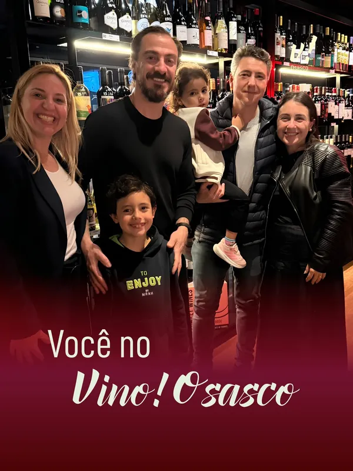
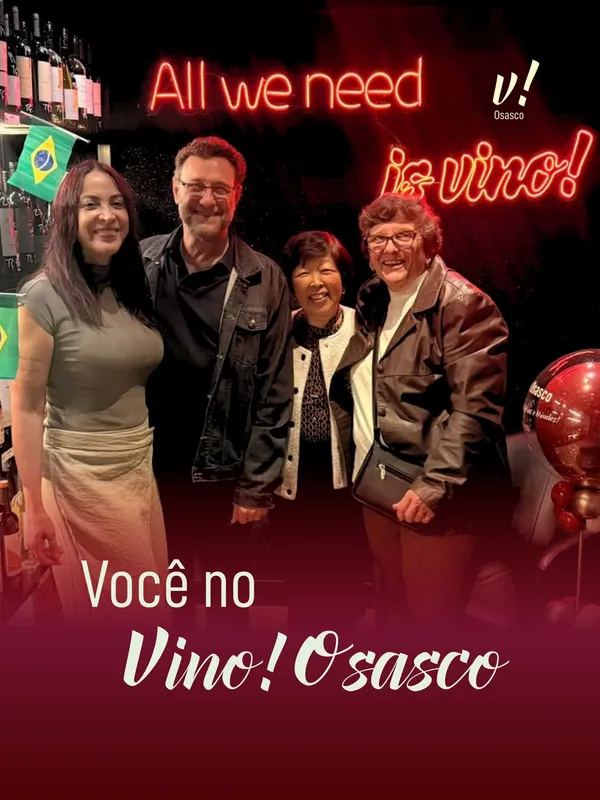
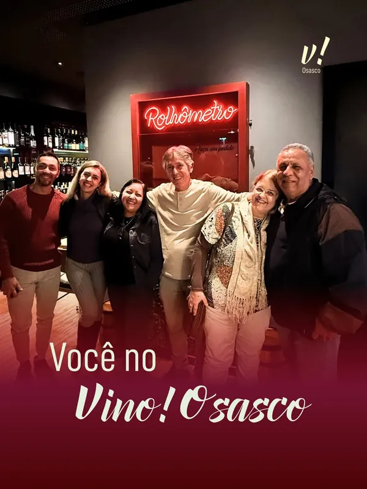
Quem já brindou aqui
Nota 4,9 no Google, com 152 avaliações
-
Comida maravilhosa e o preço das taças permite provar mais de um rótulo. Lugar lindo e romântico.
Victória Coan -
Atendimento excelente, comida maravilhosa. A ideia de ir até a adega e escolher o vinho é muito legal. Recomendo demais!
Alexandre A. -
… Adoramos a iniciativa de nos oferecer sugestões de vinhos que harmonizariam perfeitamente com nossos pratos, e a experiência de ter taças diferentes para cada prato elevou a refeição a outro patamar. Meu risoto de gorgonzola, pera e nozes estava simplesmente delicioso! …
Paulo Lima -
Lugar muito aconchegante e atendimento excelente, sou uma pessoa que não está habituada a beber vinho, mas experimentei várias opções e gostei de todas …
Miguel Souza -
Que experiência, que lugar e pessoas maravilhosas. Eles realmente gostam do que fazem. Fui comemorar meu 1 ano de namoro e foi incrível!!! Recomendo
Paloma Ferreira -
Entradas e pratos principais muito bons! Boa variedade de vinhos e a proposta de popularizar e desmistificar o vinho é sensacional! Voltaremos! …
Augusto Miotto Lima
Aniversário, encontro em família ou noite a dois?
Conte no WhatsApp o dia, o horário e quantas pessoas vêm, e a equipe reserva a sua mesa. No salão, peça para entrar no Clube Vino: você ganha pontos a cada visita e troca por benefícios.
Siga @vinoosasco
Agenda da casa, pratos novos e as fotos da série Você no Vino! Osasco.
Onde estamos
R. Dr. Paulo Ferraz da Costa Aguiar, 139
Vila Yara, Osasco – SP
06020-012
Horário de funcionamento
- Terça a sexta
- 18h às 23h30
- Sábado
- 12h às 16h e 18h às 23h30
- Domingo e segunda
- Fechado